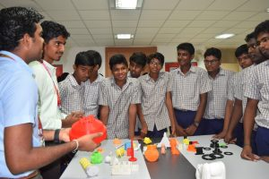
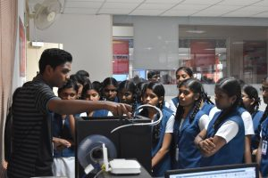
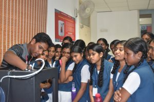
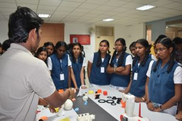
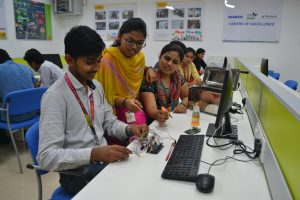
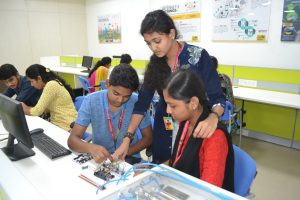
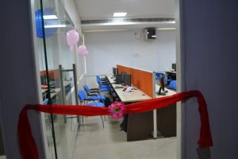
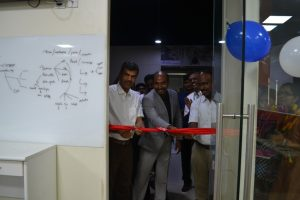
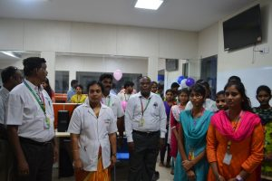

CENTER OF EXCELLENCE
3D Printing
Additive Manufacturing
Kyutech
Data Science
VLSI
System Design
Center for 3D Printing and Reverse Engineering
The 3D printing and Reverse Engineering Lab is one of the outstanding Centre of Excellence (CoE) , started in association with prestigious Lu-Ban workshop of China and Tianjin Vocational college of Mechanical and Electricity.This CoE is meant for providing fundamental knowledge on additive manufacturing process for the engineering students and practicing engineers from the industry and research establishment.
This CoE is closely working with different engineering industries and providing different design solution, based on their critical solution requirements. Our trainee students are allowed to undertake such challenging industrial design projects under the supervision of faculty members.The successfully completed few of the industrial projects includes, DXC.technologies, Rane NSK, WABCO, Borgwarner, Livergent technologies etc.,
The students of MIT participated in the International Skill competition held at China during June 2018 along with the different Global competitors, and won the excellence award. The applications of 3D Reverse Engineering technology is widely applied in different fields of engineering includes Architecture, Automotive, Aerospace, Ship building, Satellite modelling and further providing supports different Medical application




Center for Additive Manufacturing
This is a special establishment to carry out R&D projects for Industries. Students from 1st year through 3rd year are engaged in this centre on various projects in R&D and Numerical Simulation. This Centre is equipped with high configuration workstations with research version of Simulia Abaqus and Ansys software with unlimited features to solve any real time problems. Special software such as FeSafe, Tosca and Insight are also available in the Additive Manufacturing Centre to carry out fatigue analysis, topological optimization and Design of experiments respectively. A strong basic on physics and mathematics is being imparted from the first year onwards to create the ability among the students to be inducted into the project. Interactions with experts from IITs, NITs and Industries are arranged to train the students through this centre.
MIT-KYUTECH_wabco Center for IOT
WABCO – MIT – KYUTECH Center of Excellence for IoT was established in the year 2018 by MIT jointly with Wabco, Chennai and Kyutech Institute of Technology, Japan to provide a Platform for innovation in cutting edge technologies like IoT, NFV, 5G, M2M, D2D, Security. This CoE has state of art infrastructures such as Superfast Internet, Workstation space, Development boards, signal generators, Oscilloscope which creates an ecosystem to do Industrial projects, R&D and product development to address the ongoing shortcomings with game-changing solutions with faster. This COE focuses on building solutions for applications such as agriculture, automobile, telecom, healthcare, and consumer goods as well as preparing undergraduate students to participate in competitions in and around the world to showcase their skills.


Center for data science and research
MIT established CoE for Data Science which will create platform to interact with stakeholders like academia, industry and create digital solutions for Industry 4.0. This centre will work with industry, private agencies and government to identify the technology, enable industry oriented research, citizen centric problem solving, data driven decision making, improve the academic capabilities and supporting skills development. The CoE established to support SME business, improving product development, guiding market assessment and assist them by creating new tools with other industry partners and solve complex problems by using startups. MIT, Centre of Excellence, consists of technologies & tool-kits, data scientists, educationist, techno-functional consultants, sprinkled with Data Science and Analytics Education This centre work with industry and make use of large dataset for training and testing the models, creating technology solutions and bring the experts with their deep knowledge of business to provide mentoring and share best practices. This centre will work with other colleges in India and establish partner with foreign university to develop new platform and provide right skills and talent.
T&VS Center for VLSI Design



Center for System Design
The Center for System Design (CSD) started with the research facilities in the Analog & Digital system design and the areas of nanoelectronics and MEMS. The centre is actively involved in R & D as well as consultancy projects and has collaborations with several industries, academic institutes, and R&D organizations across the country. The laboratories are adequately equipped with state-of-the-art facilities.